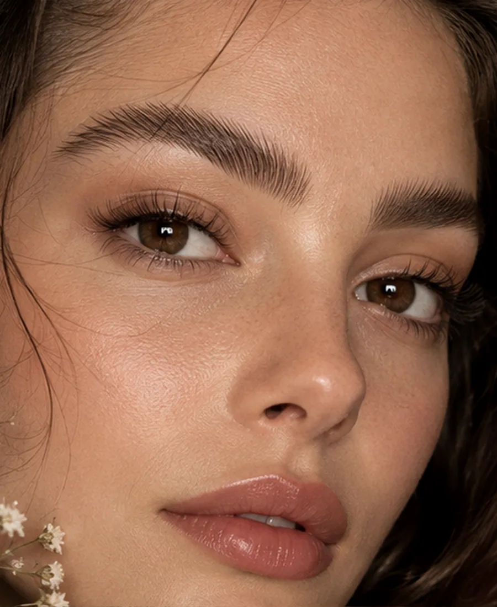

نچرال
تارهای سبک و ظریف برای نتیجهای که از دور مرتب و از نزدیک طبیعی بماند.
NATURALدر طراحی حرفهای ابرو، قرار نیست نتیجه مصنوعی یا یکشکل باشد. فرم صورت، تراکم تارها، جهت رشد و سبک دلخواهت بررسی میشود تا طراحی نهایی ظریف، تمیز و کاملاً هماهنگ با چهرهات باشد.


میکروبلیدینگ روشی ظریف برای ایجاد ظاهر تارهای طبیعی در ناحیه ابرو است. نتیجه خوب از انتخاب مدل شروع نمیشود؛ از شناخت ساختار چهره، فرم طبیعی ابرو و برنامهریزی دقیق برای طراحی شروع میشود.
دسته طلایی وسط تصویر را بکش تا بین حالت طبیعی و نمونه طراحیشده جابهجا شوی.


سبک نهایی بعد از بررسی فرم صورت و تراکم طبیعی انتخاب میشود؛ این کارتها فقط برای درک تفاوت زبان بصری هر تکنیک هستند.
تارهای سبک و ظریف برای نتیجهای که از دور مرتب و از نزدیک طبیعی بماند.
NATURALبافت سبک و رو به بالا برای حس airy و ابرویی که بازتر و جوانتر به نظر میرسد.
FLUFFYتار + سایه برای عمق کنترلشده؛ مناسب وقتی قاب مشخصتر اما همچنان نرم میخواهی.
COMBOهاله سایهای نرم برای ظاهری تمیزتر و مشخصتر، با شدت قابل تنظیم.
POWDERنمونهها برای نمایش فرم و سبک هستند. روی هر کارت بزن تا تصویر بزرگتر و مشخصات مدل را ببینی.
فرم رزرو کاملاً سمت کاربر اجرا میشود و برای نسخه نمایشی به سرویس خارجی احتیاج ندارد. بعد از ثبت، خلاصه درخواست روی دستگاهت آماده میشود تا راحت آن را کپی یا به پیامرسان منتقل کنی.
در میکروبلیدینگ، نتیجه خوب فقط به روز اجرا مربوط نیست؛ مراقبتهای بعدی و واقعبینی درباره روند ترمیم هم مهم است.
روشی برای ایجاد ظاهر تارهای طبیعی در ابرو با طراحی و اجرای بسیار ظریف است. مناسب بودن آن باید با توجه به پوست، ابرو و سابقه کارهای قبلی بررسی شود.
فرم صورت، تقارن، تراکم، جهت رشد، رنگ مو و ابرو، سابقه کار قبلی و نتیجهای که دوست داری دیده شود.
نه. ظاهر ابرو در روزهای اول ثابت نیست و با روند ترمیم تغییر میکند؛ ارزیابی نهایی باید طبق توصیه متخصص انجام شود.
باید وضعیت رنگ و فرم قبلی بررسی شود. در بعضی موارد ممکن است ابتدا اصلاح یا ارزیابی اثر کار قبلی لازم باشد.